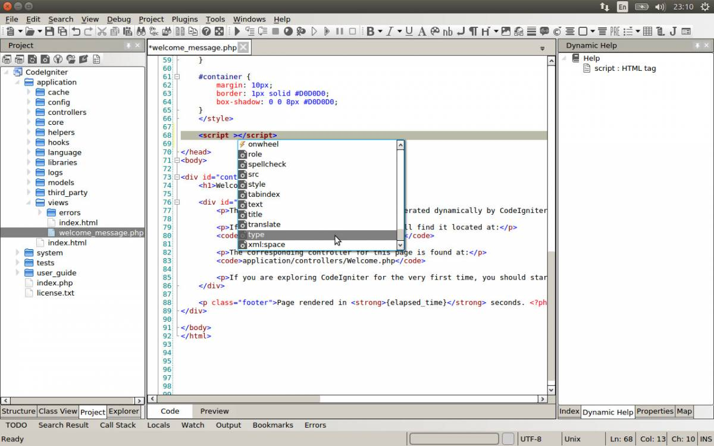
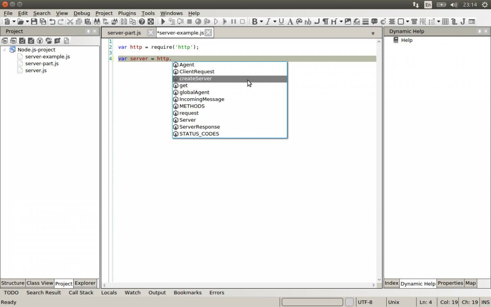
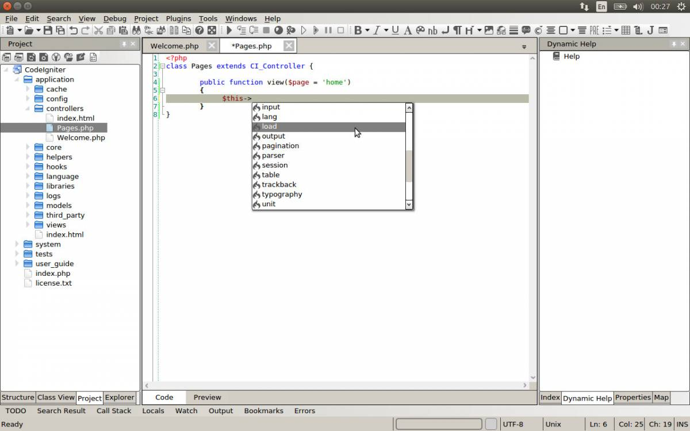
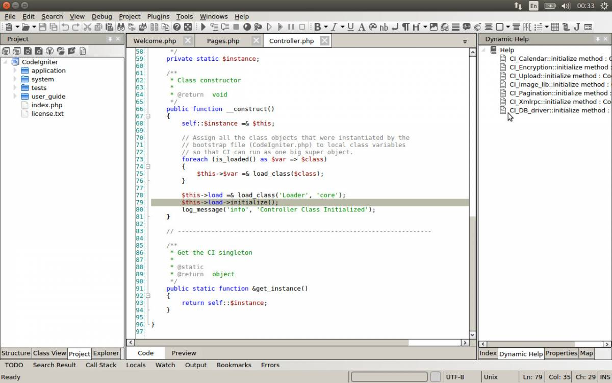
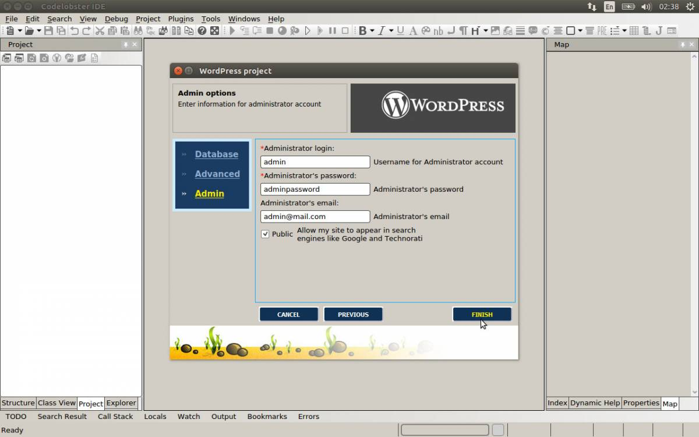

|
PHP/HTML/CSS/JavaScript редактором и средой для WEB CodeLobster IDE – новая IDE для Linux систем
В закладки В этой статье предлагаем вам познакомиться с CodeLobster – обновлённым бесплатным PHP/HTML/CSS/JavaScript редактором и средой для WEB-программирования. Приложение активно развивается, недавно была выпущена полностью кроссплатформенная версия CodeLobster IDE. Программисты по всему миру уже давно применяют его под Windows для создания своих сайтов, а теперь и пользователи Linux и Mac OS могут испытать эту IDE на практике. Linux-сообщество избаловано наличием большого количества бесплатного программного обеспечения, в том числе и различных сред для разработки программ. Поэтому CodeLobster предоставляет максимум функциональности в своей бесплатной версии. Доступен весь комплекс инструментов по редактированию исходных кодов и для удобной проектной работы. Конечно, купив лицензию вы получите ещё FTP и SQL клиент, а так же множество плагинов для автоматизации работы с фреймворками и CMS. С другой стороны, бесплатную версию IDE можно свободно и неограниченно использовать – с функцией работы по FTP прекрасно справится FileZilla, а управлять базами данных можно с помощью phpMyAdmin, например. Основные возможности CodeLobster Быстрый редактор отлично понимает HTML, CSS, JavaScript и PHP код, можно внедрять JS-скрипты и CSS-стили в свои HTML-файлы, подсветка дифференцированная. CodeLobster распознаёт DOM-структуру документа и помогает писать корректную разметку, предлагая автозавершение тегов и подсказки по всем атрибутам HTML-элементов.  Поддерживается как чистый JavaScript, так и популярные библиотеки. Если вы работаете с Node.js и решили, к примеру, создать сервер, нужно ввести такую конструкцию: var http = require(“http”); var server = http.createServer(function(request, response) { //Callback function body }); Создав объект “http”, введите селектор – оператор “.” и вы сразу же получите весь список методов, доступных для этого объекта во всплывающем окне.  Использовать функцию автодополнения можно в любой момент, просто начните вводить имя функции и нажмите Ctrl + Space для появления списка возможных опций. Например, при использовании MVC-фреймворков, таких как CakePHP или CodeIgniter, мы обычно начинаем работу с создания контроллера. Вот элементарный пример для CodeIgniter: <?php class Pages extends CI_Controller {
public function view($page = ‘home’){ //Your code here }
} Расширяя класс контроллера, мы переопределяем метод view() и добавляем программную логику. Разобраться с обилием функций, которые предоставляет фреймворк, нам поможет наша IDE. Набираем $this, далее вводим селектор членов “->” и жмём горячие клавиши Ctrl + Space. Автокомплит работает в зависимости от контекста, в результате мы получим список функций, допустимых к использованию в текущем случае.  Остаётся только выбрать нужный нам метод из списка. Программируя на JavaScript, на чистом PHP или применяя готовый код, вы можете кардинально оптимизировать процесс разработки, если будете использовать все возможности своей IDE. Проекты с большим количеством исходных файлов или сложной структурой не вызовут у вас затруднений, CodeLobster обеспечивает возможность сворачивания блоков кода и автодополнение закрывающих скобок и кавычек – это позволит вам быстро и без ошибок оформлять свои функции и циклы. Для навигации по коду воспользуйтесь нумерованными закладками – нажмите Ctrl + цифру от 0 до 9. Теперь, для мгновенного перемещения в данную позицию, жмите Alt + номер закладки. Любую последовательность из цифр от 0 до 9 запомнить легко, это несложный трюк, но он сделает вашу навигацию по файлам действительно эффективной. В процессе набора, чтобы не отвлекаться на поиски соответствующей справочной информации, загляните на вкладку “Dynamic Help” в правой панели программы. IDE автоматически подбирает ссылки на релевантную документацию в зависимости от текущего контекста.  Выберите нужный пункт, чтобы открыть страницу в браузере. Проконсультироваться с официальной документацией по любой из поддерживаемых WEB-технологий можно установив указатель мыши на интересующий элемент в коде и нажав клавишу F1. Удобный дебаггер сэкономит вам массу времени, когда дело дойдёт до поиска и устранения ошибок в приложении. Отладка скриптов в CodeLobster происходит с помощью известного PHP модуля XDebug, который нужно предварительно включить и настроить на сервере. После этого мы получим возможность полностью контролировать работу приложения и просматривать состояние переменных на любом этапе выполнения. Можно проходить весь код последовательно по шагам или создать точки остановки, исследовать содержимое пользовательских и глобальных переменных, а так же выводить данные профайлера. Профессиональная версия CodeLobster PHP IDE Профессиональная версия IDE предоставляет два мощных и очень удобных инструмента, благодаря которым можно вообще не отвлекаться на посторонние приложения, а полностью сконцентрироваться на логике программы.
CodeLobster, как и любая современная IDE, полностью поддерживает целый набор библиотек:
Но отдельное внимание следует уделить автоматизации работы с фреймворками. Как раз возможность быстро скачать, установить и добавить в свой проект любой из инструментов позволяет программисту ускорить процесс развёртывания нового сайта или WEB-приложения. Чтобы использовать эту функциональность, перейдите в главное меню программы в раздел “Plugins”, выберите требуемый плагин и кликните пункт “Create Project”. Например, создавая новый проект с поддержкой WordPress нам не нужно скачивать систему, нет необходимости даже использовать WEB-интерфейс для установки.  Мастер создания проектов по шагам проведёт вас через весь процесс, необходимо лишь ввести корректные настройки для соединения с базой данных и учётные данные администратора сайта. Установка CodeLobster PHP IDE в Ubuntu Ubuntu, как и любая другая из современных Linux систем, предоставляет наряду с командной строкой также и продвинутый графический интерфейс. Скачайте дистрибутив IDE с официального сайта http://www.codelobsteride.com, как правило, скачанный пакет сохранится в пользовательской директории, в папке “Downloads”. С помощью графического навигатора Nautilus перейдите в папку с пакетом, сделайте правый клик по нему и из контекстного меню выберите пункт “Open With Software Install”. Если хотите произвести установку в режиме командной строки, откройте терминал и перейдите в директорию с пакетом с помощью команды “cd”. После чего выполните следующую команду: sudo apt-get install ./codelobsteride-1.4.0_amd64.deb Описанный процесс установки подходит для систем, использующих формат пакетов .deb, таких как Debian, Linux Mint, Ubuntu, Nitrux, Kubuntu и прочих. Для того, чтобы установить CodeLobster IDE на Red Hat Linux, CentOS, Fedora, openSUSE, ALT Linux и другие системы с форматом пакетов .rpm, потребуется конвертировать пакет. Для этого нужно установить утилиту Alien, после чего выполнить команду: alien -r codelobsteride-1.4.0_amd64.deb Теперь можете установить полученный rpm-пакет любым удобным способом, например с помощью такой команды: sudo yum localinstall codelobsteride-1.4.0_amd64.rpm Для быстрого доступа к своей новой IDE, не забудьте создать ярлык прямо на рабочем столе Ubuntu. Все ярлыки на локально установленные программы хранятся в директории “/usr/share/applications”. Перейдите в эту папку с помощью Nautilus и найдите файл с именем “CodeLobsterIDE”. Скопируйте его – нажмите Ctrl + C и вставьте на свой рабочий стол, нажав Ctrl + V. Теперь можно быстро запустить программу в любой момент, создать новый проект и уже через минуту приступить к программированию: разработать сайт, блог или изучить новые возможности в PHP 7. |
|
Так же в этом разделе:
|
�